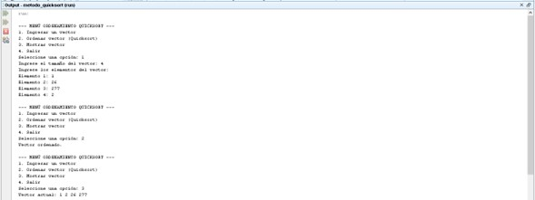
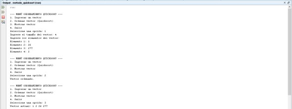

UNIDAD 5: Métodos de Ordenamiento
5.1 Algoritmos de Ordenamiento Interno
5.1.1 Burbuja (Bubble Sort)
El algoritmo de burbuja es uno de los métodos de ordenamiento más sencillos. Su funcionamiento consiste en recorrer repetidamente la lista y comparar pares de elementos adyacentes, intercambiándolos si están en el orden incorrecto. Este proceso se repite hasta que no se necesitan más intercambios, lo que indica que la lista está ordenada.
5.1.2 Quicksort (Ordenamiento Rápido)
Quicksort es un algoritmo de ordenamiento eficiente basado en el principio de divide y vencerás. Elige un "pivote" de la lista y divide los demás elementos en dos sublistas: los que son menores que el pivote y los que son mayores. Luego, aplica recursivamente el mismo proceso a estas sublistas. Finalmente, concatena las sublistas ordenadas con el pivote en el medio.
5.1.3 ShellSort
ShellSort es una mejora del algoritmo de inserción directa. Su idea principal es ordenar elementos que están distantes entre sí, utilizando intervalos (también conocidos como "gaps"). Estos intervalos se van reduciendo progresivamente hasta que finalmente se aplica un ordenamiento por inserción cuando los elementos están suficientemente cerca unos de otros.
5.1.4 Radix Sort
El ordenamiento por radix (Radix Sort) es un algoritmo no comparativo que ordena los elementos de acuerdo con los dígitos o bits de sus valores, comenzando desde el menos significativo hasta el más significativo. Este algoritmo es útil para ordenar grandes cantidades de números enteros o cadenas de caracteres de longitud fija.
5.2 Algoritmos de Ordenamiento Externos
5.2.1 Algoritmo de Intercalación (Merge Sort)
El algoritmo de intercalación, también conocido como Merge Sort, es otro algoritmo basado en la estrategia de divide y vencerás. Divide la lista en dos mitades, ordena recursivamente ambas mitades, y luego las fusiona de manera ordenada. Es muy eficiente para ordenar grandes volúmenes de datos que no caben en memoria principal.
5.2.2 Mezcla Directa (Direct Merge)
La mezcla directa se refiere a la técnica de fusionar dos listas de manera eficiente, sin necesidad de dividir repetidamente como en Merge Sort. Esta técnica se usa cuando ya se tiene una lista parcialmente ordenada y solo se requiere un paso adicional de fusión para completarla.
5.2.3 Mezcla Natural (Natural Merge Sort)
Este algoritmo también es una variante del Merge Sort, pero aprovecha las subsecuencias ordenadas de la lista original para reducir el número de pasos necesarios. Identifica "corridas" o secuencias ordenadas y las fusiona de forma eficiente.
Ejemplo


 
